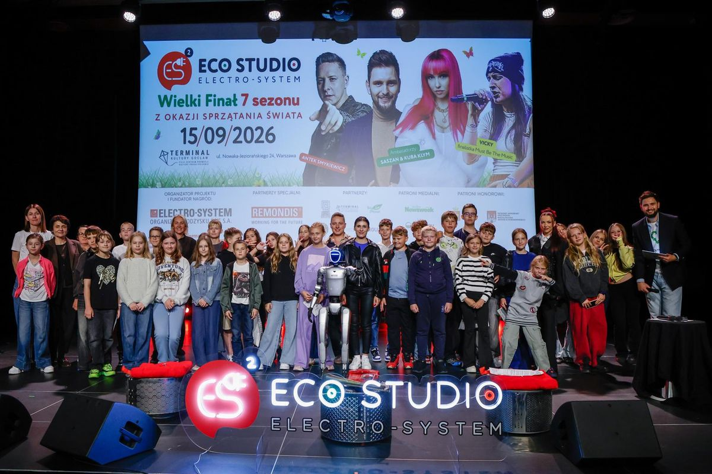
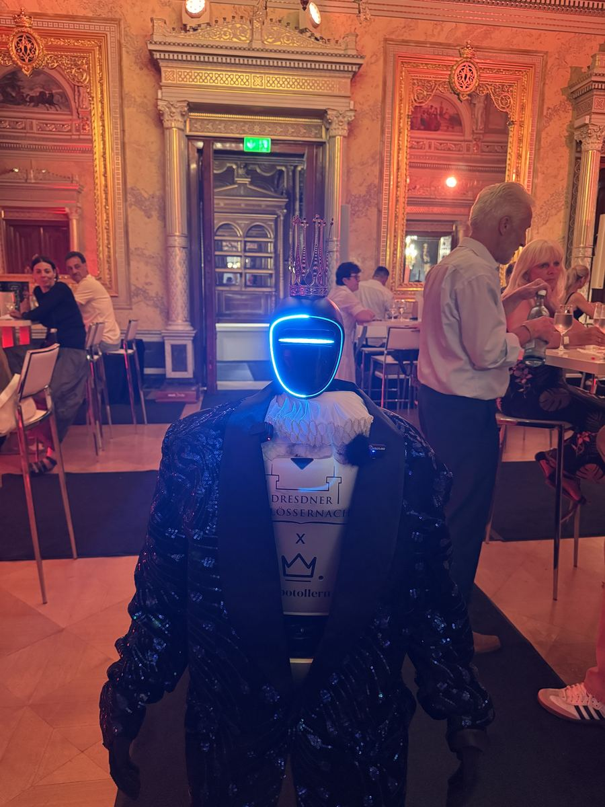

- Strona główna
- Blog
- Pokazy na event
Przewodnik eventowy · Atrakcje
Pokazy na event: ognia, laserowy, dronów, barmański i robota — ceny, formalności, wybór
Pokaz to najmocniejszy punkt programu i jednocześnie ten, który najłatwiej zmarnować: w trakcie kolacji, bez zapowiedzi, w miejscu, z którego nic nie widać. Jakie pokazy na event są do wyboru, ile kosztują według publicznych cenników, jakie wymagają zgód i jak dopasować je do sali, plenerze i publiczności.

„Pokaz ognia”, „pokaz ognia cena”, „pokaz laserowy cena”, „pokaz dronów cena” — to jedne z najczęściej wpisywanych haseł o atrakcjach eventowych. I jedne z najtrudniejszych do sprawdzenia, bo wykonawcy pokazów rzadko publikują cenniki. Ten poradnik zbiera to, co da się ustalić z publicznych źródeł (stan: październik 2026), opisuje każdy rodzaj pokazu z jego wymaganiami i podpowiada, jak dopasować pokaz do miejsca. Jeśli szukasz szerszej listy atrakcji, nie tylko pokazów, zacznij od przewodnika atrakcje na event.
Rodzaje pokazów na event
| Pokaz | Gdzie działa | Czas | Czego wymaga |
|---|---|---|---|
| Pokaz ognia (fireshow) | plener | 10–20 min | strefa bezpieczeństwa, zgoda obiektu, pogoda bez silnego wiatru |
| Sztuczne ognie | plener, z dala od zabudowy | 5–15 min | wykonawca z uprawnieniami, zgody, strefa, informacja dla obiektu i służb |
| Fontanny zimnych iskier | sala i plener | 1–3 min | zgoda obiektu; w sali odpowiedni sprzęt i odległość od gości |
| Pokaz laserowy | sala, hala, dziedziniec | 10–20 min | ciemność, lekki dym, prąd; może wyświetlać logo |
| Pokaz dronów | plener, duża przestrzeń | 10–15 min | zgody lotnicze, strefa, pogoda; długie przygotowanie |
| Barman show (flair) | sala i plener | 15–30 min + serwis | bar, prąd, składniki; w wersji z ogniem zgoda obiektu |
| Iluzjonista sceniczny / close-up | sala | 30–60 min / 1–3 h | scena lub przejście między stolikami, nagłośnienie |
| Taniec, akrobatyka, LED dance | sala i plener | 5–20 min | przestrzeń, wysokość, podłoga |
| Choreografia robota humanoidalnego | sala i plener | kilka minut + praca wśród gości | kilka metrów przestrzeni, muzyka; operator w cenie |
| Mapping, pokaz świateł | fasada, ściana sali | 5–15 min | ciemność, przygotowana animacja, prąd |
| Ciężki dym (efekt, nie pokaz) | sala | pierwszy taniec, wejście | wytwornica z suchym lodem, obsługa |
Ile kosztują pokazy na event
Kwoty z serwisów porównujących oferty i z ogłoszeń. Tam, gdzie polskich danych nie ma, piszemy to wprost zamiast zgadywać.
| Pokaz | Cena orientacyjna | Źródło |
|---|---|---|
| Pokaz sztucznych ogni | średnio ok. 10 000 zł; 8 464–11 600 zł | cenauslug.pl, 2026 |
| Fontanny zimnych iskier (wynajem urządzeń) | oferty od ok. 600 zł | ogłoszenia, 2026 |
| Wytwornica ciężkiego dymu z obsługą | 1 008–1 200 zł, średnio 1 133 zł | cenauslug.pl, 2026 |
| Barman show (flair), 2–8 h | 2 000–8 000 zł; sam barman mobilny średnio 1 806 zł | cenauslug.pl, 2026 |
| Iluzjonista na imprezie firmowej | średnio 3 727 zł; 1 600–4 666 zł; nagłośnienie sceny osobno | cenauslug.pl, 2026 |
| Pokaz ognia | brak publicznych cenników w Polsce; wycena według liczby artystów, czasu i pirotechniki | — |
| Pokaz laserowy | brak publicznych cenników; zależy od liczby projektorów i animacji z logo | — |
| Pokaz dronów | brak polskich cenników; w Niemczech oferty od kilkunastu tysięcy euro | oferty DE, 2026 |
| Choreografia i praca robota humanoidalnego 33bots | w cenie wynajmu: pełny dzień od 5 500 zł netto, krótsze wejście taniej | nasz cennik, 2026 |
Jak dostać konkretną wycenę pokazu
Podaj wykonawcy: datę i godzinę, miejsce (sala czy plener, miasto), liczbę gości, oczekiwaną długość, czy ma być logo lub motyw, kto zapewnia prąd i nagłośnienie. Zapytaj o dojazd, OC i warunki przy złej pogodzie. Oferta bez tych informacji to tylko widełki.
Pokaz ognia: na weselu, urodzinach i festynie
Pokaz ognia to najczęściej wybierany pokaz plenerowy w Polsce: na weselu jako finał wieczoru, na urodzinach w ogrodzie, na dniach miasta po koncercie. Artyści pracują z poi, kijami, wachlarzami i pirotechniką sceniczną, często do muzyki i z choreografią; dobre grupy mają gotowe programy na 10, 15 i 20 minut.
Co trzeba zapewnić:
- Miejsce. Płaskie, niepalne podłoże (kostka, trawa, nie drewniany taras), kilka metrów wolnej przestrzeni wokół artystów i odległość od gości, którą wskazuje wykonawca.
- Zgoda obiektu. Hotel, dom weselny czy park muszą wiedzieć, że będzie ogień. Część obiektów ma własne zasady albo zakaz.
- Pogoda. Silny wiatr odwołuje pokaz. Ustal w umowie, co wtedy: inny termin, pokaz LED zamiast ognia, zwrot części kwoty.
- Prąd i nagłośnienie. Muzyka do pokazu zwykle idzie z nagłośnienia DJ-a; wykonawca powinien podać, czego potrzebuje.
- Zapowiedź. Prowadzący zaprasza gości na zewnątrz 5 minut przed startem. Bez tego pokaz ogląda połowa sali przez okno.
Na weselu pokaz ognia wypada zwykle między 22:00 a 23:30, przed oczepinami. Na urodzinach w ogrodzie — po zmroku, jako punkt kulminacyjny. Na festynie — po koncercie, jako zakończenie dnia. Więcej o układaniu wieczoru weselnego w poradniku atrakcje na wesele.
Pokaz laserowy i pokaz dronów
Pokaz laserowy to odpowiedź na pytanie „co zamiast ognia w sali”. Projektory laserowe rysują w dymie figury, tunele i napisy — także logo firmy i imiona pary. Potrzebuje ciemności (po zmroku lub w zaciemnionej sali), lekkiego dymu i prądu; działa w hali, na dziedzińcu, w sali bankietowej. Czas: 10–20 minut. Wykonawcy wyceniają według liczby projektorów i stopnia personalizacji animacji.
Pokaz dronów to setki świecących dronów układających na niebie logo, napisy i animacje. Najdroższe i najbardziej wymagające widowisko: zgody lotnicze, wyznaczona strefa startu i lotu, brak silnego wiatru i deszczu, kilkumiesięczne przygotowanie. W Polsce cenników się nie publikuje; w Niemczech oferty zaczynają się od kilkunastu tysięcy euro. Ma sens na jubileuszu dużej firmy, dniach miasta albo festiwalu — nie na imprezie dla 100 osób.
Pokazy do sali: barman show, iluzjonista, taniec
W sali bankietowej najlepiej działają pokazy, które nie potrzebują nieba ani strefy bezpieczeństwa.
- Barman show. 15–30 minut żonglerki butelkami i efektów, potem barman serwuje drinki gościom. 2 000–8 000 zł za pokaz flair (cenauslug.pl, 2026). Wersja z ogniem wymaga zgody obiektu.
- Iluzjonista. Sceniczny — 30–60 minut dla całej sali, potrzebuje sceny i nagłośnienia. Close-up — 1–3 godziny między stolikami w trakcie kolacji, bez sceny; na mniejszych imprezach dociera do każdego gościa. Średnio 3 727 zł na imprezie firmowej (cenauslug.pl, 2026).
- Taniec, akrobatyka, LED dance. Numer na 5–20 minut na otwarcie gali lub po części oficjalnej. Sprawdź wysokość sali i podłogę; akrobatyka powietrzna wymaga punktów mocowania.
- Pokaz świateł i mapping. Projekcja na ścianie sali lub na stole z tortem, kilka minut, mocny efekt na jubileuszu.


Pokaz robota humanoidalnego
Robot humanoidalny Unitree G1 wykonuje kilkuminutowy układ choreograficzny zsynchronizowany z muzyką — na scenie, na parkiecie, na czerwonym dywanie. To zwykle kulminacja programu i moment z największą liczbą nagrań, bo dla większości gości jest to pierwszy humanoid widziany na żywo. Po pokazie robot nie znika: zostaje wśród gości, wita, podaje rękę, rozmawia po polsku i w innych językach, pozuje do zdjęć w koszulce z logo.
Pokaz nie jest osobną pozycją w cenniku — jest częścią wynajmu: pełny dzień od 5 500 zł netto, krótsze wejście (na przykład powitanie i pokaz w dwie godziny) wyceniane indywidualnie i taniej. W cenie operator, transport, branding i ubezpieczenie OC; bez zaliczki, faktura po wydarzeniu. Robot potrzebuje kilku metrów kwadratowych i muzyki z nagłośnienia — nie potrzebuje zgód, strefy bezpieczeństwa ani pogody. Szczegóły: show robotów i robot na występ sceniczny.
Jak dopasować pokaz do miejsca i publiczności
- Sala czy plener. Plener: ogień, fajerwerki, drony, lasery po zmroku. Sala: lasery, barman, iluzjonista, taniec, robot, zimne iskry.
- Liczba gości. Close-up i barman show działają do około 100 osób. Powyżej — scena, ekrany, pokazy widoczne z daleka.
- Godzina. Pokazy świetlne i ogniowe potrzebują zmroku: w czerwcu po 22:00, w grudniu po 16:30.
- Hałas i sąsiedzi. Fajerwerki po 22:00 w mieście to skargi. Lasery i robot są ciche.
- Cel. Pokaz „do oglądania” (ogień, drony) daje wspólny moment. Pokaz „z interakcją” (barman, iluzjonista close-up, robot) daje gościom udział i zdjęcia z marką.
- Plan B. Każdy pokaz plenerowy potrzebuje alternatywy na deszcz, zapisanej w umowie.
Formalności i bezpieczeństwo
- Uprawnienia. Sztuczne ognie i pirotechnikę sceniczną obsługują wykonawcy z uprawnieniami pirotechnicznymi. Zapytaj o nie wprost.
- Zgoda właściciela terenu lub obiektu. Na ogień, dym, hałas, godziny montażu. Bez niej pokaz może zostać odwołany w dniu imprezy.
- Ubezpieczenie OC wykonawcy. Przy ogniu i pirotechnice to podstawa, nie formalność.
- Strefa bezpieczeństwa. Wykonawca określa odległość gości od pokazu; organizator pilnuje, żeby nikt jej nie przekroczył (taśma, obsługa).
- Imprezy masowe. Przy dużych wydarzeniach plenerowych (dni miasta, festiwale) obowiązują przepisy o bezpieczeństwie imprez masowych — pokazy pirotechniczne trzeba ująć w dokumentacji i poinformować służby.
- Czujniki dymu w sali. Ciężki dym, lasery z dymem i zimne iskry mogą uruchomić alarm. Obiekt musi o nich wiedzieć wcześniej.
Najczęstsze pytania
W Polsce prawie nikt nie publikuje cennika pokazów ognia — wykonawcy wyceniają według liczby artystów, długości (zwykle 10–20 minut), pirotechniki i dojazdu. Dla porównania: pokaz sztucznych ogni kosztuje według cenników z 2026 roku średnio około 10 000 zł, a fontanny zimnych iskier to oferty od około 600 zł. Przy zapytaniu podaj miejsce, datę, liczbę gości i czy pokaz ma być w plenerze — wycena będzie konkretna.
Po zmroku i przed oczepinami, zwykle między 22:00 a 23:30, w momencie, gdy wszyscy goście są jeszcze na sali, a parkiet już działa. Prowadzący zaprasza gości na zewnątrz, pokaz trwa 10–15 minut, potem powrót do zabawy. Latem zmrok zapada późno, więc w czerwcu pokaz wypada po 22:00.
W sali ogień zwykle odpada (zgody obiektu, czujniki dymu, wysokość). Pokaz laserowy działa w hali, na dziedzińcu i w sali bankietowej, potrzebuje ciemności i lekkiego dymu, może wyświetlać logo firmy. Alternatywa bez ognia dla wejścia pary młodej lub na scenę: fontanny zimnych iskier.
To najdroższe widowisko na liście. Polscy wykonawcy nie publikują cenników; na rynku niemieckim oferty zaczynają się od kilkunastu tysięcy euro za pokaz kilkudziesięciu–kilkuset dronów. Pokaz wymaga zgód lotniczych, wyznaczonej strefy i dobrej pogody, więc planuje się go z kilkumiesięcznym wyprzedzeniem.
Pokaz ognia, laserowy i sztuczne ognie: 10–20 minut. Barman show: 15–30 minut pokazu, potem serwowanie drinków. Iluzjonista sceniczny: 30–60 minut; close-up przy stolikach: 1–3 godziny. Choreografia robota humanoidalnego: kilka minut, potem robot zostaje wśród gości. Pokaz ustawiaj po głównym daniu, nigdy w trakcie kolacji, i zawsze z zapowiedzią prowadzącego.